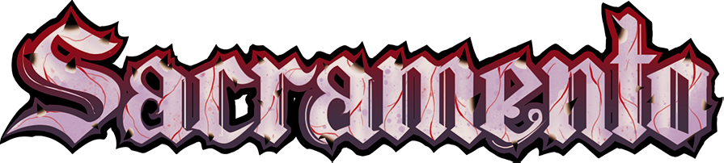

◆Sistema de Vápula
Cada golpe te llena de corrupción. Úsala para potenciar tus ataques, pero si la barra se llena tus estadísticas caen al 30%.

Has sido elegido como tributo para la Vápula. Sobrevive a unas tierras devastadas por la corrupción y convierte esa misma energía oscura en tu mejor arma.